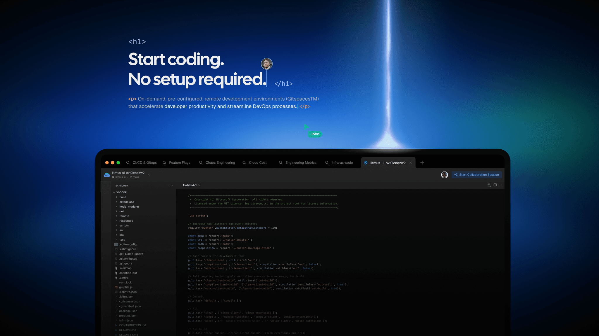
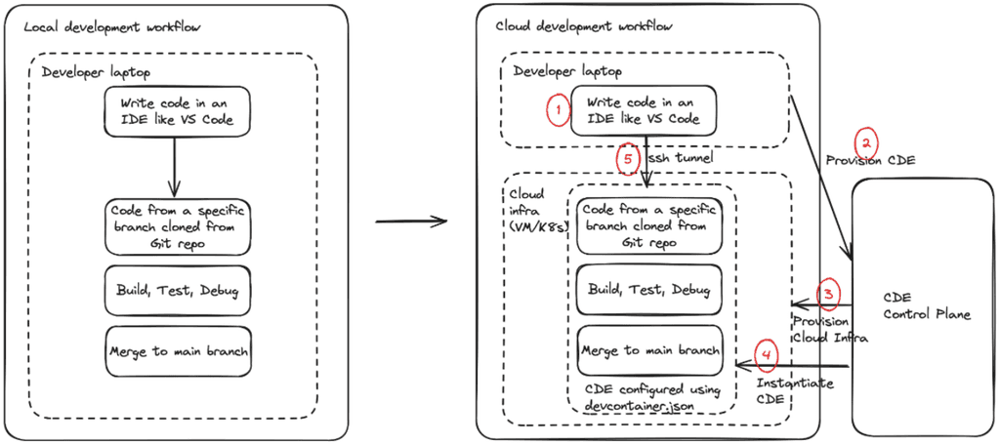
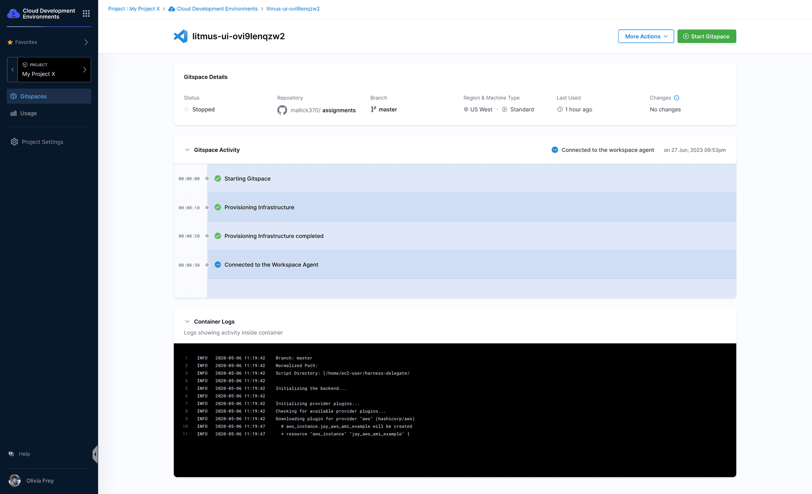
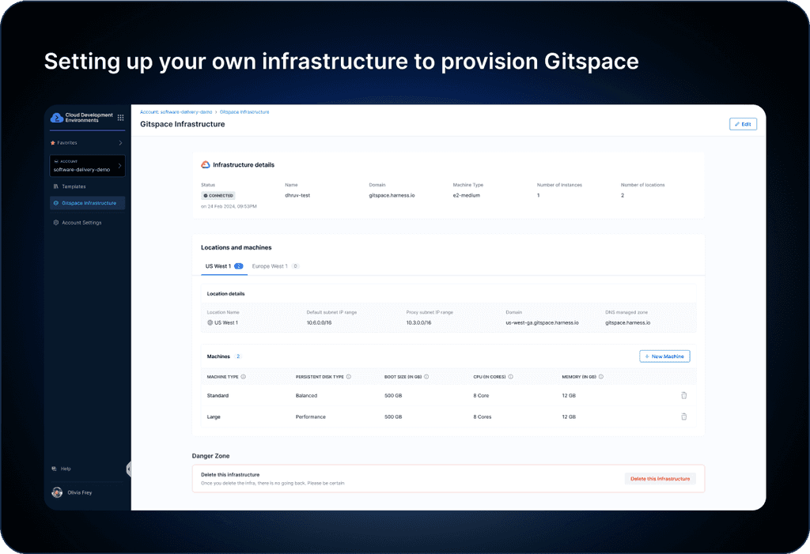
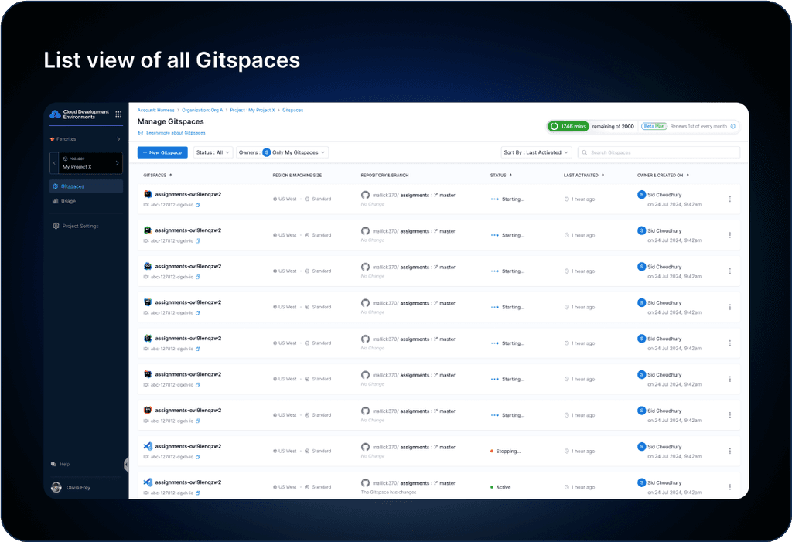
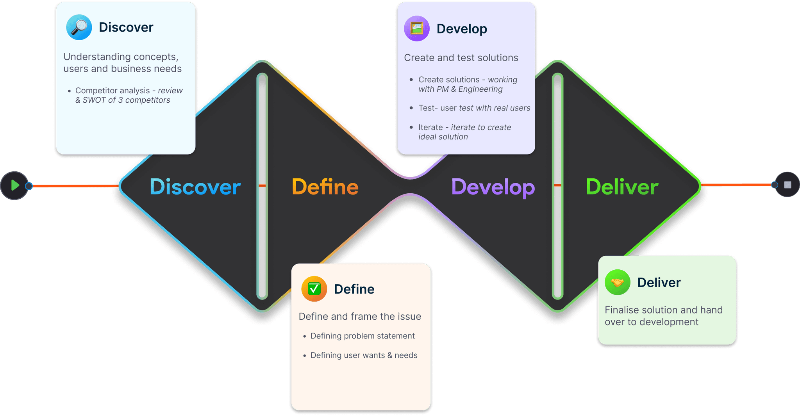
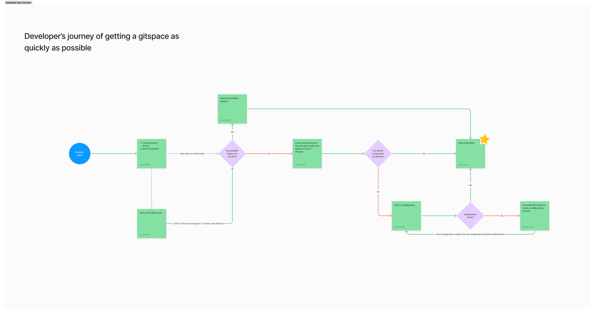
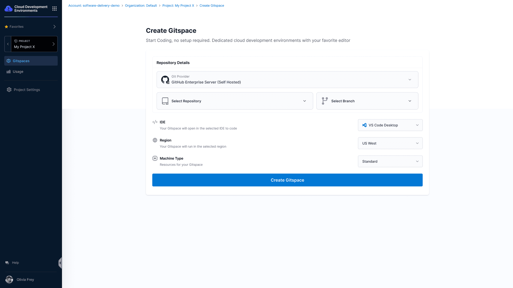
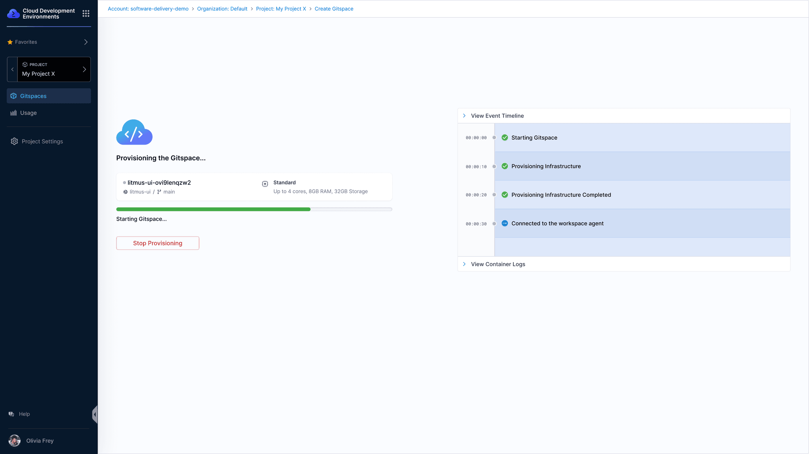
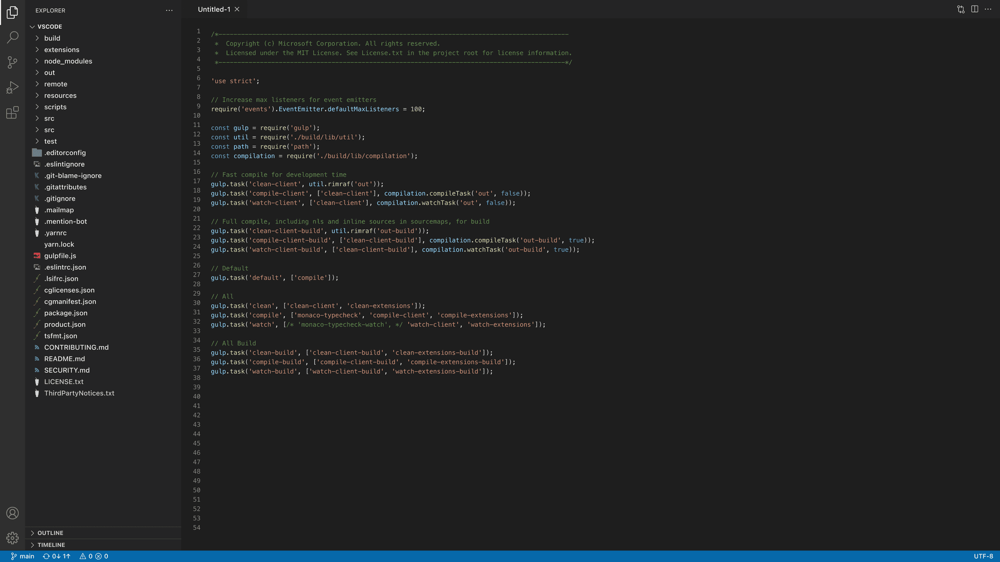

Building the next-generation tool for coding in the cloud
Early 2024, Harness announced a new product: Cloud Development Environments (CDE). They let developers code instantly from any location, improve collaboration, accelerate onboarding, and strengthen security through centralised control and consistent setups.

00
Why the business invested in it
Cloud Development Environments set out to solve four things for developers and large companies.
Optimise developer experience
Empower developers to code, build and test instantly from any location, using their preferred, properly configured tools.
Improve collaboration and productivity
Reduce setup time and provide consistent environments so teams get to coding faster, share configurations and collaborate seamlessly.
Accelerate developer onboarding
Cut onboarding from weeks to minutes, dramatically reducing ramp-up time for new developers, contractors and remote teams.
Enhance security and governance
Centralised control reduces security risk, ensures compliance, protects intellectual property and simplifies administration.
01
What is a cloud development environment?
Developers write, run and debug code in the cloud, free from the resource limits of a local laptop.

02
The final design
The marquee screens of the product.



03
Process
We took a double-diamond approach to reach our initial beta offering.

Competitor analysis
We did a thorough analysis of GitHub Codespaces, Coder and Gitpod. From a feature standpoint, these were the places we could compete:
- Integrating with all Git tools
- A cost-effective solution, using providers like OVH Cloud instead of expensive AWS or GCP capacity
- Granular role-based access control to prevent code leaking to the wrong people
Target personas and primary flows
Developers
The primary users of CDEs. They write, test and debug code without managing the underlying infrastructure, and need seamless integration with version control, CI/CD pipelines and other development tools.
Platform engineers
DevOps engineers automate and streamline the processes between development and IT. They use CDEs to configure infrastructure as code, manage deployment pipelines, monitor applications and keep cloud applications running smoothly.
Then we created an initial flow diagram.

The minimum sellable product
In this phase we focused on the features that were absolutely needed, what we call the MSP phase. The goal is to design just enough to showcase the product's capability to customers and get the conversation going.
Beta at Unscripted
After validating the designs with a few existing Harness customers, we handed off for development. By September 2024 we launched the beta offering at the Unscripted conference.
04
Competing against a short attention span
Bringing up a cloud editor took around four to five minutes, and we were seeing drop-off.
One developer said that because the code takes time to load in the cloud, he'd rather open VS Code locally and pull the repository with a single command. We were effectively doing the same thing, but I had designed a rather boring waiting state before the editor came to life.
The engineers had ideas for optimising the time with network protocol work, and brought it down to about two minutes on average. The waiting state was mine to fix.
Previous iteration


New iteration

Developers wanted to see the editor open as their waiting state. It gives a sense that things are working and the Gitspace is coming up, like a skeleton UI that signals something is loading correctly.
This brought drop-off to almost zero. Users still wait for the code to load, but it feels like the familiar wait of a local setup on their own machine.
05
Results
They saw the potential in the product and are actively collaborating with us, giving valuable feedback that keeps improving its features and usability.